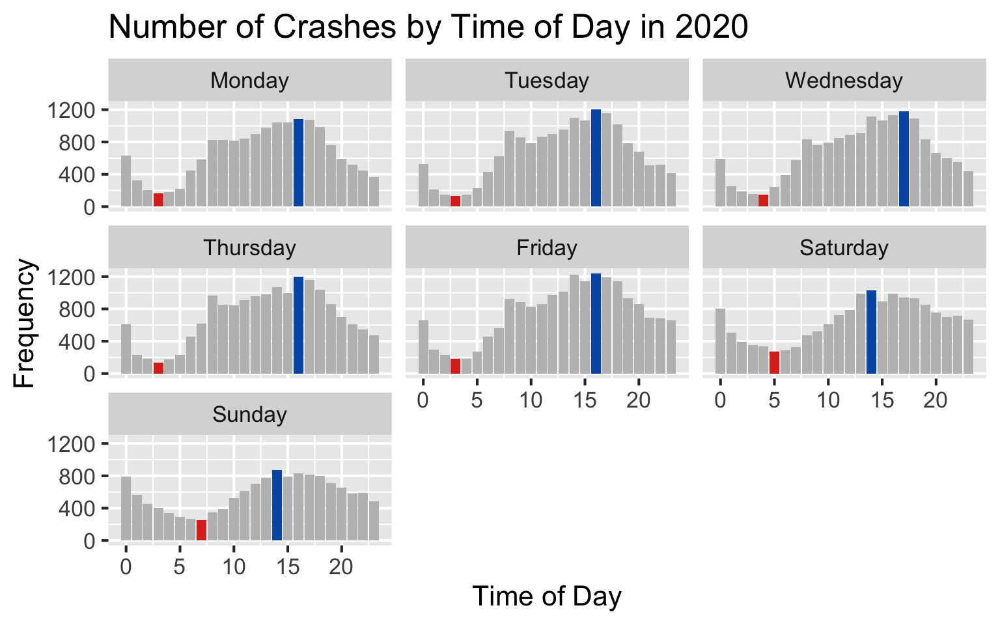
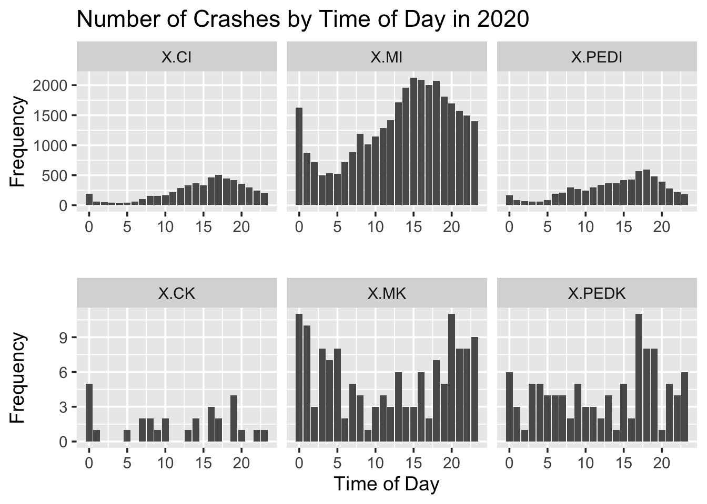
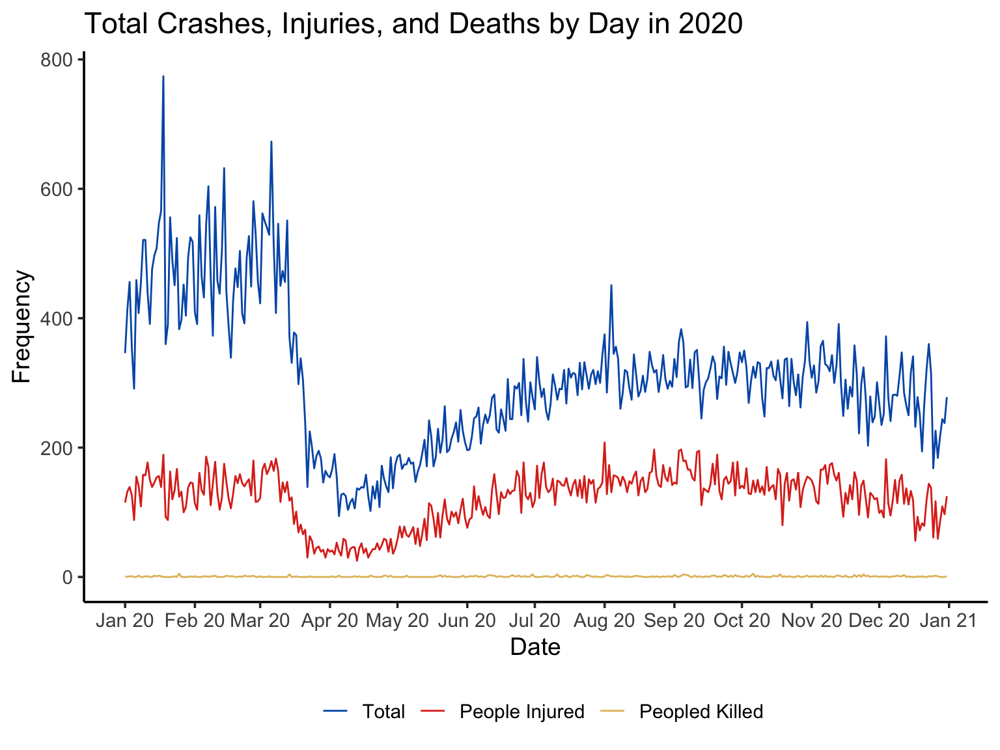

Chapter 5 Results
5.1 Impact of Time of Day and Day of the Week on Crashes
One question that we are seeking to answer is: how does the time of day and the day of the week affect the number of crashes that occur and the number of people killed/injured in New York City?

The above plot shows a small multiples plot of the frequency that crashes occurred during each hour of the day. Each facet shows those frequency counts for one day out of the week. We observe that the frequency of crashes over the day follows the same distribution across all days of the week. Additionally, for each day of the week, the hour with the most crashes is colored blue, while the hour with the least crashes is colored red.
For all of the weekdays, time periods that very early in the morning (1 - 5 AM) have very low numbers of crashes, with the the least amount of crashes occurring either at 3 or 4 AM. On weekend mornings, number of crashes is much higher at those early morning time periods compared to the weekdays, and the hour of least crashes occurring later in the morning (5 AM on Saturday and 7 AM on Sunday). Some likely explanations for these trends across early morning crashes are: first, there are less people are driving during the early morning during weekdays because of work/school the next day. Second, there are more people driving during the early mornings of the weekends because many people do not have work/school then. Additionally, as people consume more alcohol and are less aware during the nights before these weekend periods, more crashes occur as people are driving home during the early morning.
On the other hand, the period with the largest amount of crashes during the weekdays are from 2 - 6 PM, with the highest amount of crashes during 4 or 6 PM. On weekends, the period with the largest amount of crashes is between 2 - 4 PM, with the highest amount of crashes at 2 PM. The explanation for these high crashes hours are that this time period during the weekdays are usually rush hour, the times when the majority of the people return home from work. With the high volume of traffic, most crashes are bound to occur. As less people drive around on the weekend, there are less crashes during the day in general compared to the weekdays.

The above graphs show the casualties and fatalities that result from crashes faceted the type of casualty or fatality. Each facet shows the total number of crashes that resulted in that outcome for each hour in the day. We can observe from the injury row that cyclists and pedestrians are injured far less than than the motorist involved in accidents. This is probably because the majority of the crashes occur between two or more vehicles and without cyclists or pedestrians involved. We can see the same trend of early mornings have far less crashes relatively and that the number of crashes of all types in the injuries row increase steady until the afternoon/evening time. From the row with deaths, we can see the cyclist deaths are far more sporadic and fewer than both motorist and pedestrian deaths. This may be because crashes involving cyclists have less impact because of the bike or other reasons. We can also see that there are far more motorist deaths late at night and early morning. This may be a result of more people driving under the influence of alcohol during those time periods, while during the day, more people will be working and not driving. We can also see that pedestrians also have a high number of deaths throughout the day, almost as high as the motorist deaths. This is interesting because from the injuries row, the ratio of pedestrian to motorist injuries is far lower. However for deaths, the ratio is higher. This may be because in crashes involving motorist, although the number of those crashes is higher, they also have more safety measures, such as seat belts and airbags, to prevent death, while crashes involving pedestrians have a higher chance of being fatal.

The above graph shows the change in the number of total crashes, number of people injured, and number of people killed in crashes over all of the 2020. We can observe that for the total number of crashes and people injured, these values decreased greatly starting in mid-March and decreasing until mid-April before slowly increasing again. This trend is likely due to the impact of COVID-19, as the city shutdown and advised people to no leave their houses. As a result, many people either left the state or stayed at home, both of which decreased the number of people who drove very greatly. An interesting observation is that the decrease in total crashes is proportional to the decrease in number of people injured, which is logical. During the pre-shutdown months (January - March), total crashes averaged at levels around 450 and dropped to around 150 at the bottom. For injuries, it started at around 150 and dropped to around 50. Both of these show a 300% decrease in crashes during the same time period. However, we can also notice that the pandemic does not really have any effect on the number of deaths. For the entire year, both pre-shutdown and post-shutdown, the majority of days ranged between 0 - 5 deaths. A likely explanation for this is that deaths are quite rare during all periods of time, and less people driving does not contribute to less deaths.
5.2 Impact of Vehicle Types and Contributing Factors on Crashes at Different Locations

Above is a Cleveland dot plot showing number of vehicle collisions caused by different Vehicle types in different boroughs. We can see that all boroughs have almost the same rankings for type of vehicles that causes the vehicle collisions. Obviously, Sedan, SUV, Taxi, Pick-up Truck and Box Truck are the top five types of vehicles that causes the collisions in 2020, which accounts for more than 80% of the total vehicle collisions.
 The above cleveland dot plot different Contributing factors ranked by number of vehicle collisions in different boroughs, we can see that most accidents in 2020 are primarily caused by Driver Inattention by in each borough. Among all, Brooklyn have the biggest number of accidents caused by Driver Inattention. And Queens has almost the same number of accidents caused by Driver Inattention as well. Next come the contributing factor of Following too closely(6.72%), Failure to yield right-of-way.
The above cleveland dot plot different Contributing factors ranked by number of vehicle collisions in different boroughs, we can see that most accidents in 2020 are primarily caused by Driver Inattention by in each borough. Among all, Brooklyn have the biggest number of accidents caused by Driver Inattention. And Queens has almost the same number of accidents caused by Driver Inattention as well. Next come the contributing factor of Following too closely(6.72%), Failure to yield right-of-way.

We did a null hypothesis test on using H0: p = 0.006 and H0: p = 0.006, which is the average possibility of the death ratio in 2020, and categorized the vehicle types into severe, neutral, and mild to rank the severity of the vehicles collisions based on its likelihood of resulting in death.
From the above scatterplot, we can see that several vehicle types that would are more likely to lead to death rather than just Injury are Motorcycle, Concrete Mixer, Flat Rack, Fork lift, etc. On the Contrary, some of those types that are less likely to cause deaths rather than injuries are Bike, E-scooters, Sedan, etc.

We also did the same null hypothesis test on the death ratio by different contribution factors and rank the severity of the vehicles collisions based on their likelihoods of resulting in death.
From the above scatter plot, we can see that four of the most severe vehicle collision contributing factors that are more likely to lead to death are Unsafe speed, Traffic Control Disregarded, Pedestrian/Bicyclist/Other Pedestrian Error/Confusion. On the Contrary, those factors that are less likely to cause deaths rather than injuries are following too closely, failure to yield right-of-way, and driver inattention/distraction.

In order to see whether any data points has been mistakenly recorded as well as observing whether the missing values for borough would have any geographical patterns, we plot the location of vehicle collisions on the map after removing all location with longitude and latitude with the magnitude of 0 since those collisions would be otherwise happened on the Null Island. And the reason why we plotted them by facet instead of only color categories was that the missing values patterns may be possibly overlapped by other points, which makes it harder to obverse. Meanwhile, it would be better for determing whether there are mistakenly coded positions for each borough.
From the above map, we can see that the borough for all vehicle collisions seem to be recorded correctly. For the missing value plots, we can clearly see a large number of those collisions seems to be happened on the intersection of boroughs or on the boundary of the island while there are also some other points that are evenly distributed on the map, which means we may probably drop those NA values from geographic perspectives.


The first plot above shows the density of vehicle collisions happened in New York in 2020. We can see that the most accident occurred most frequently at Bronx Boroughs while the Staten Island seems to have the least accidents occurred in 2020.
The second plot shows the density of vehicle collisions that caused death in New York in 2020 with actually locations of those collisions shown as dots on the heatmap. We can see that it has almost the same distribution as the first heatmap, which occurred most frequently at Bronx Boroughs and least frequently at Staten Island.
5.3 Impact of Contributing Factors and Vehicle Type on People Injured
5.4 Including Plots
Plot 1: Contributing Factors for accidents based on the vehicle type with the number of people injured
Question1: Which contributing factors affect each of the vehicles the most, based on the number of people injured in the accidents?

This plot - Heatmap gives an indication of contributing factor with respect to each vehicle type which result in the most number of injury cases in the New York City.
We can observe from the graph that in case of Sedan as the vehicle type, most of the number of injured cases have taken place (approx 5600) when the driver was inattentive, followed by failure yield right of way(approx 2089), and Following to closely. With this insight, the police can make sure that when they are inspecting a Sedan on accident, they can check if the driver in the seat is attentive or not. Also,We observe that for all types of vehicles, Driver inattentiveness is a major factor for the injury of the person on road (cyclist, motorist or pedestrian). Another observation we notice is that most of the contributing factors of the injury is for the vehicle Sedan. After Sedan, Ports Utility Vehicle shows the maximum number of injury cases for the same 3 reasons that the sedan has shown. So keeping a check on those three factors of accidents can help reduce the number of injuries in the accidents.
5.5 Impact of Street Locations On Number of People Injured
Plot 2: Top 15 streets in each borough based on the number of injured cases in New York. Question2 : Which of the top 15 streets in each of the Boroughs in New York have the maximum number of injured cases?

This is plot which shows the top 15 streets in each borough where maximum number of people have got injured compared to the other streets and avenues in that borough. From the plot we can observe that in Bronx and Brooklyn there are more number of people getting injured compared to the other parts of New York, namely the Manhattan, Queens and Staten Island. Staten Island has the least number of injury cases.
On inspecting the plot, we can notice that in Bronx - Bruckner Boulevard is the street where most number of injury cases come from, in case of Brooklyn its the Atlantic Avenue, for Manhattan, 2nd Avenue shows the maximum number of injury cases with over 110 injuries, for Queens, Queens Boulevard shows the maximum number of injury cases for the entire Queens Borough, and finally in Staten Island, Hylan Boulevard has the maximum number of injury cases with over 100 injuries. It can also be noticed that in Staten Island, this is the only street having such high number of accidents, so if additional preventive measures are taken, then this number can be brought down. Keeping a check on these streets in each of the borough, can drastically reduce the number of injuries in the accidents overall in the city of New York.
5.6 Impact of borough on Number and Type of People Injured and Killed
Plot 3: For each of the borough, how many pedestrians, motorist, cyclist have been injured and killed. Question 3: For each of the boroughs, how many pedestrians, motorists, cyclists have been injured and killed based on the vehicle type?


This is a parallel coordinate plot, which shows the for a number of vehicles, number of cyclist injured, cyclist killed, pedestrians injured, pedestrians killed, motorist injured, motorist killed, total number of people injured and total number of people killed per each of the five borough.
For the plot we can see that pickup trucks from Bronx has injured the most number of people ~ close to 800 people - it has hit around 530 motorists, 75 cyclists, 170 pedestrians , while killing 4 of them - 2 pedestrians, 1 motorist, 1 cyclist . Vehicle Buses from Queens has killed the maximum number of people (close to 9). Pickup Trucks from Bronx have injured the maximum number of cyclists. Maximum number of motorists- 2 have been killed by Convertible and Motor scooter.